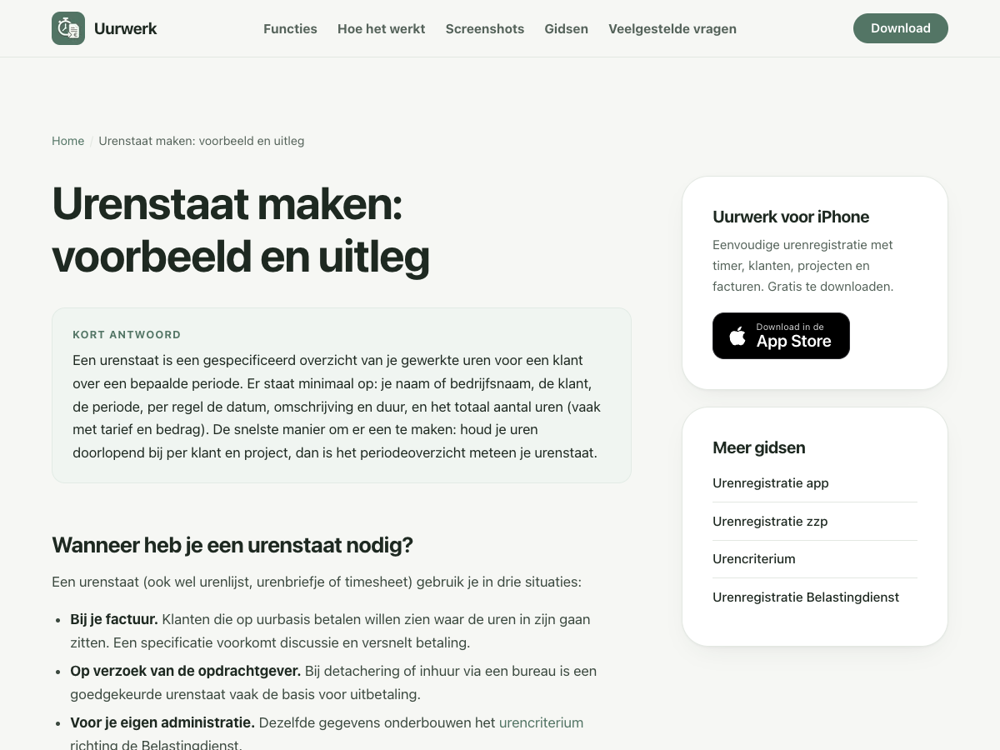

Meer waarde per zoekvraag.
De grootste kans: maak je bestaande gidsen bruikbaar met sjablonen, echte appvoorbeelden en controleerbare productinformatie. Begin bij de twee pagina’s die al vertoningen krijgen.
Live website, broncode, jouw screenshots en officiële documentatie onderzocht. Na je opdracht lokaal uitgevoerd; nog niet gepubliceerd.
De belangrijkste verbeteringen staan lokaal klaar.
Bekijk de werkende pagina’s. De audit hieronder beschrijft de situatie vóór deze wijzigingen.
Probeer de hulpmiddelen
Drie downloadbare bestanden, een ingevuld rekenvoorbeeld en een calculator die alleen in de browser rekent.
Product en vertrouwen
- Appkeuze met echte schermen en een nieuwe factuurhandleiding.
- Over de maker, contact en privacy.
- Auteurs, wijzigingsdatums, gerelateerde links en verbonden structured data.
De technische basis staat al.
De 57/100 uit je screenshot is een score van een externe tool. Verschillende meldingen komen niet overeen met de huidige site.
Pagina’s bereikbaar
Alle sitemap-URL’s geven HTTP 200, één H1 en een passende canonical. Een onbekende URL geeft 404.
JSON-LD-blokken
Drie per pagina, allemaal parseerbaar. WebSite staat op de homepage; Article en BreadcrumbList op gidsen.
Gidsen met eigen beelden
Geen afbeeldingen in de hoofdinhoud van de negen gidsen. De homepage heeft wél officiële appbeelden die we kunnen benutten.
| Melding | Beoordeling | Voorgestelde actie |
|---|---|---|
| Geen JSON-LD / WebSite / FAQ | Aanwezig Syntax is geldig; geschiktheid voor rich results is een afzonderlijke vraag. | Controleer de exacte audit-URL en foutmelding. Geen sitebrede reparatie nodig. |
| Geen Organization | Gedeeltelijk Parivee staat als geneste publisher in schema. | Uitbreiden met vaste identiteit, maker en echte contactgegevens. |
| Geen llms.txt / AI-bestanden | Geen bewezen blokkade llms.txt geeft 404. Google gebruikt het niet voor Search-zichtbaarheid. | Optioneel 1–2 uur na de belangrijkste verbeteringen. Google |
| Geen crawl-delay | Geen Google-fout robots.txt staat crawling toe; sitemap werkt. | Google ondersteunt deze regel niet. Controleer echte bottoegang via hosting/logs. Specificatie |
| FAQ-schema als groeikans | Bestaand Google beëindigde FAQ-rich-results op 7 mei 2026. | Goede zichtbare antwoorden behouden. Google-changelog |
Reikwijdte en wat nog onbekend is
Tien live pagina’s technisch gecontroleerd; de homepage en twee kanspagina’s ook als ruwe HTML onderzocht. Repository, App Store-feiten en geselecteerde zoekresultaten bekeken.
Geen volledige GSC-export, backlinkprofiel, crawlerlogs, appconversies of Core Web Vitals beschikbaar. JSON-parsing bewijst geen volledige schema.org-conformiteit. Een browserbezoek bewijst geen toegang voor alle zoekbots. “Citability 0” bewijst niet dat Uurwerk nergens genoemd wordt.
Twee bestaande pagina’s verdienen de eerste aandacht.
Vier geselecteerde query-paginacombinaties, laatste 28 dagen, alle apparaten en landen. Dit is geen volledig verkeersoverzicht.
Drie vragen gaan over betekenis en voorbeeld. Verbeter één URL met een volledig voorbeeld en downloads.
35 van 42 vertoningen in de aangeleverde uitsnede.
“Hoe kies je een tool die uren direct omzet in facturen?” sluit aan op de kern van Uurwerk.
Zeven vertoningen. Richtinggevend, nog te weinig om een hoge CTR of veel downloads te voorspellen.
| Zoekvraag | Vertoningen | Klikken | Positie |
|---|---|---|---|
| wat is een urenstaat | 29 | 0 | 13,9 |
| hoe kies je een tool die uren direct omzet in facturen | 7 | 0 | 5,6 |
| urenstaat voorbeeld | 5 | 0 | 9,6 |
| voorbeeld urenstaat | 1 | 0 | 10,0 |
Bij een hypothetische CTR van 5% zouden 42 vertoningen ongeveer twee klikken opleveren. Groei vereist ook meer relevante vertoningen en zoekvragen. Geen trafficprognose baseren op deze uitsnede.
Van uitleg naar een bruikbare urenstaat.
Behoud /urenstaat-maken/. Een definitie, tabel en checklist bestaan al. Voeg de hulpmiddelen toe waarmee de bezoeker zijn taak afmaakt.

Het voorbeeld staat verderop. Geen sjabloondownload. De eigen bedrijfsnaam en het expliciete uurtarief ontbreken in de voorbeeldtabel.
Screenshot van de live pagina, 9 september 2026. De pagina bevat verderop al een ingevulde tabel.
Urenstaat maken: voorbeeld en gratis sjabloon
Een urenstaat is een overzicht van je gewerkte uren per datum en activiteit, voor een klant en een bepaalde periode.
Voorbeeld: Studio Noord → Acme Bouw
Project: websiteonderhoud · Tarief: € 85 per uur
| Activiteit | Uren | Bedrag* |
|---|---|---|
| Menu bijwerken | 2,50 | € 212,50 |
| Controle | 1,50 | € 127,50 |
| Totaal | 4,00 | € 340,00 |
* Illustratief, exclusief btw. Definitief sjabloon bevat ook datums en periode.
Zonder account of e-mailadres.
Ontwerpschets in de huidige Uurwerk-stijl. De downloads worden in de uitvoeringsfase gemaakt en getest.
Opleveren in 1–2 dagen
- Leeg en ingevuld XLSX-sjabloon, plus printbare PDF.
- Volledig voorbeeld met beide partijen, datums, tarief en totaal.
- Uitleg over pauzes, decimale uren en urenstaat versus factuur.
- Passende appdemonstratie en App Store-link na het hulpmiddel.
Dit aanbod is al zichtbaar in de markt
EasyHours biedt direct bruikbare Excel-templates. Onze pagina geeft uitleg, maar laat deze vervolgstap liggen.
Een waargenomen verschil in aanbod. Geen bewijs dat downloads op zichzelf een hogere ranking veroorzaken.
Tweede pagina: laat de route van uren naar factuur zien
Breid /urenregistratie-app/ uit met de zoekvraag uit je screenshot als sectiekop. Geef controleerbare criteria: klant/project, tarief en btw, openstaande uren, controle, PDF/verzenden en kosten.
Gebruik echte appbeelden voor uren kiezen, factuur controleren en versturen. Zet bij het versturen duidelijk dat Pro nodig is. Gekko laat deze functie al met productbeelden zien. Uurwerk heeft officiële screenshots beschikbaar die nu vooral op de homepage staan.
Vergelijk spreadsheet, lichte iPhone-app en boekhoudpakket eerlijk. Geen onbevestigde claims over Android, teams of koppelingen. Raming: 1–1,5 dag.
Verbind product, maker en praktische kennis.
De negen gidsen hebben ongeveer 526–635 woorden hoofdinhoud. Meer tekst alleen is geen doel. Eigen voorbeelden, demonstraties en accurate feiten geven de pagina’s meer inhoudelijke waarde.
Wie zit achter Uurwerk?
De site noemt Parivee. De App Store noemt Patrick als ontwikkelaar en verwijst naar vejoapps.com.
Actie: overpagina, contact/support, privacy en een duidelijke uitleg van de relatie. Verbind dezelfde identiteiten in schema.
Apple Lookup API, gecontroleerd op 9 september.
Wat kost het precies?
Gratis functies worden uitgelegd; het Pro-bedrag staat bewust niet op de site.
Actie: actuele prijs en periode verifiëren. Eén centrale gratis/Pro-tabel op de bestaande gratispagina. Offline, export en opslag ook verifiëren.
Welke gids helpt hierna?
De gedeelde layout kiest de eerste vier andere gidsen uit een vaste lijst.
Actie: verwijs vanuit de tekst en zijbalk naar inhoudelijk passende gidsen, hulpmiddelen en de relevante productstap.
Welke pagina krijgt welke taak?
| Pagina | Eigen taak | Verbetering |
|---|---|---|
| Homepage | Product kiezen | iPhone-positionering, bewijs en gratis/Pro-samenvatting. |
| Urenregistratie-app | Oplossingen afwegen | Criteria, echte demo en passende alternatieven. |
| App gratis | Gratis/Pro begrijpen | Centrale prijstabel; geen extra prijzen-URL nodig. |
| Urenstaat maken | Urenstaat gebruiken | Sjablonen; later eventueel invulhulp op dezelfde URL. |
| Urenregistratie zzp / bouw | Werkpraktijk organiseren | Eigen voorbeeldweek of bouwklus. |
| Urencriterium / Belastingdienst | Voorwaarden / onderbouwing begrijpen | Specifieke officiële bronnen, gecontroleerde berekeningen. |
| Zonder Excel / online | Werkwijzen vergelijken | Eerlijke vergelijking; browserdienst versus iPhone-app verduidelijken. |
| Nieuw: uren-factureren | Factuur daadwerkelijk maken | Handleiding; eerst toetsen of deze taak een eigen pagina verdient. |
AEO: direct helpen
Heldere definities, volledige voorbeelden, logische koppen en gerichte antwoorden. Maak informatie zelfstandig begrijpelijk zonder een verplicht woordenaantal.
Eerste oplevering: een urenstaat die iemand daadwerkelijk kan invullen en gebruiken.
GEO: een bruikbare bron worden
Eigen productbeelden, gecontroleerde prijzen en functies, auteursinformatie en echte praktijkcases. Verifieer zoekbottoegang bij de hosting.
Daarna: relevante boekhouders en zzp-publicaties benaderen met het hulpmiddel. Backlinks en externe vermeldingen zijn nog niet gemeten.
De invulling hierboven is een aanbeveling op basis van de site. Er bestaat geen citatiegarantie. OpenAI onderscheidt zoekcrawler OAI-SearchBot van trainingscrawler GPTBot. De huidige robotsregels staan crawling in beginsel toe.
Zes weken, met de eerste verbeteringen in week één.
Raming: circa 8–12 werkdagen productie, verdeeld over zes weken. Appverificatie, het gekozen hulpmiddel en externe reacties bepalen de precieze doorlooptijd.
Urenstaat
Nulmeting, productfeiten, verbeterde pagina, downloads en passende interne links.
Eerste opleveringProduct & vertrouwen
Appkiesgids met schermen, over/contact/privacy, prijsinformatie en verbonden schema-entiteiten.
Eigen hulpmiddel
Factuurhandleiding na intentiecontrole. Eén reken- of invulhulp, plus kwaliteitsronde van fiscale gidsen.
Verspreiden & leren
Echte gebruikerscasus en relevante publicaties voorbereiden. Profielen afstemmen en de eerste zoekdata vergelijken.
Wat bewust lage prioriteit krijgt
llms.txt, RSS of bijzondere AI-bestanden puur om een toolscore op te hogen. Ook een reeks nieuwe pagina’s voor vrijwel identieke zoekvragen, extra FAQ-schema en onbevestigde reviews leveren geen overtuigend eerste werkpakket op.
Behoud bestaande URL’s. Onderzoek eventuele overlap tussen homepage en kiesgids met GSC-data voordat je pagina’s samenvoegt. Optimaliseer snelheid wanneer metingen een echt knelpunt laten zien.
Meet de stap van zoekvraag naar app.
Leg eerst de volledige nulmeting vast. Evalueer na 28, 56 en 90 dagen. De vier screenshotregels zijn te klein voor een betrouwbare numerieke groeibelofte.
Zoekprestaties en brongebruik
- GSC: pagina × query, merk/algemeen, land en apparaat. Drie maanden plus beschikbare historie.
- Indexering en door Google gekozen canonical van de eerste pagina’s.
- Google AI-inclusie en het generatieve-AI-impressierapport; niet verwarren met aparte AI-clicks.
- Bing AI Performance waar beschikbaar; kleine vaste steekproef van vragen in andere zoekdiensten.
GSC AI-rapport · AI-inclusie. Afwezig rapport kan ook te weinig data betekenen.
Gebruik en zakelijke uitkomst
- Sjabloondownload en voltooid hulpmiddel per instappagina.
- App Store-doorklik met bronpagina en CTA-plaatsing.
- App Store-webreferrals/campagnes waar beschikbaar; een klik is geen installatie.
- Nieuwe relevante vertoningen én conversies volgen. Bij voldoende data gericht snippets of inhoud aanpassen.
Bij gelijkblijvende vertoningen eerst bereik/indexering onderzoeken. Bij groeiende klikken zonder doorklikken naar de app eerst productfit en vervolgstap verbeteren.
Acceptatiecriteria voor de eerste oplevering
Lokale leeschecklist. Vinkjes worden alleen in deze browser bewaard en starten geen implementatie.
Controleerbare bevindingen, expliciete aannames.
Het volledige plan bevat de paginabriefs, prioriteitentabel, ramingen, risico’s en meetregels. De bronnennotitie beschrijft de actuele technische richtlijnen.
Live website · Urenstaat · Appkiesgids
Eigen live controle en broncode, 9 september 2026.
Google: AI-optimalisatie
Technische en inhoudelijke richtlijnen; llms.txt.
Google: wijzigingen documentatie
Beëindiging FAQ-rich-results.
OpenAI: crawlers
Zoektoegang en trainingskeuze.
Google: software-appmarkup
Schema en geschiktheid voor rich results.
Apple: actuele productgegevens
Platform, ontwikkelaar en ontwikkelaarswebsite.
Feedback op dit plan
Je kunt onderdelen annoteren in Lavish. Met het formulier zet je één gebundelde opmerking klaar; pas ‘Send to Agent’ verstuurt deze.